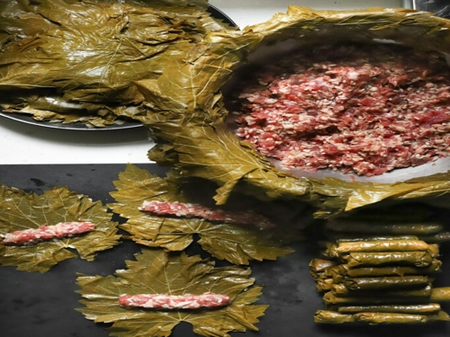

Home

Description
Syrian stuffed grape leaves (Warak Enab) are made with a spiced ground beef and rice mixture.
Ingredients
- 2 tablespoons olive oil (plus more for drizzling between layers)
- 1 pound ground beef
- 1/2 teaspoon salt (plus more for seasoning layers)
- 2 teaspoons 7 Spice
- 1 1/2 cups short grain white rice
- 1/4 teaspoon cinnamon
- 1 jar grape leaves (about 60-70 in brine)
- 2 medium Yukon gold potatoes (sliced)
- 1/4 cup lemon juice
Steps
Grape Leaves Preparation
- Drain grape vine leaves and soak them in a large bowl of water.
- Gently separate and wash the leaves individually. Stack them on a plate and set them aside. It is best to cover them with a damp cloth so they don't dry out, until you are ready to start rolling them.
Prepare Stuffing
- Heat a large pan with olive oil, and cook ground beef until browned. Season with salt and 7 Spice.
- Add uncooked rice to the ground beef, then cinnamon and mix well until everything is incorporated.
Stuff, Wrap and Cook
- To stuff and roll the grape leaves, lay a grape leaf flat on a cutting board, scoop out a heaping teaspoon of the rice mixture into the center of the grape leaf, and carefully fold in the sides and roll it like you would when making a wrap. Repeat until all the stuffing has been used and place the wrapped grape leaves in a tray.
- Line the bottom of a large pot with tomatoes and/or potatoes and season with salt and pepper. Neatly arrange the stuffed and rolled grape leaves in rows, alternating directions, to completely cover the circumference of the pot. Drizzle each layer with olive oil and season with salt and pepper to taste.
- Place small round plate on top of grape leaves in the pot to hold them down and prevent floating while they are cooking.
- Add 5-6 cups of boiling water to completely cover the grape leaves and the plate, then cover the pot and cook on Medium heat for 30 minutes, until most of the water is absorbed and the rice is cooked.
- Add the lemon juice on top of the grape leaves, then cook on low heat for an additional 45 minutes.
- Remove from heat and let cool uncovered for 30 minutes. Transfer to a dish and enjoy warm!
Notes
- You can use ground lamb instead of ground beef or a mixture of both.